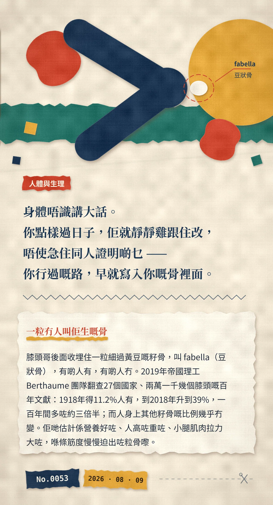

身體唔識講大話。你點樣過日子，佢就靜靜雞跟住改，唔使急住同人證明啲乜——你行過嘅路，早就寫入你嘅骨裡面。
膝頭哥後面收埋住一粒細過黃豆嘅籽骨，叫 fabella（豆狀骨），有啲人有，有啲人冇。2019年帝國理工 Berthaume 團隊翻查27個國家、兩萬一千幾個膝頭嘅百年文獻：1918年得11.2%人有，到2018年升到39%，一百年間多咗約三倍半；而人身上其他籽骨嘅比例幾乎冇變。佢哋估計係營養好咗、人高咗重咗、小腿肌肉拉力大咗，喺條筋度慢慢迫出咗粒骨嚟。